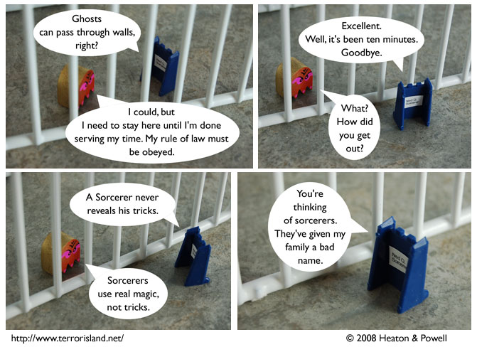

Strip #249
— Monday, January 14, 2008
Actually, they have given his family an awesome name.
Notes, Thoughts, &c.
Ben’s Notes
Ned’s a tricky one, it seems.
Lewis’s Notes
I have been six or seven places recently that were playing music from my high school days. This has reminded me of the completely objective fact that music from when I was in high school is the best music ever. I only feel bad for all the suckers who passed on before the mid-nineties, and missed out on the best music that has ever been or shall ever be.
If they are lucky, they are up in heaven listening to a kick-ass mix tape as we speak.